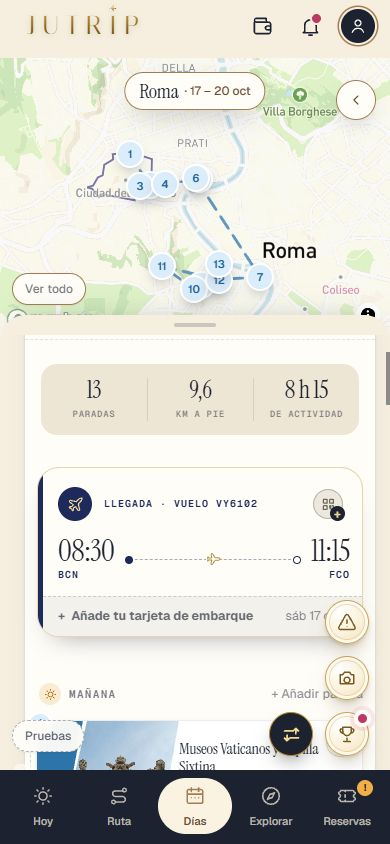
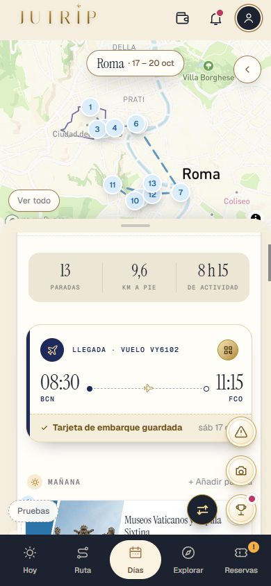
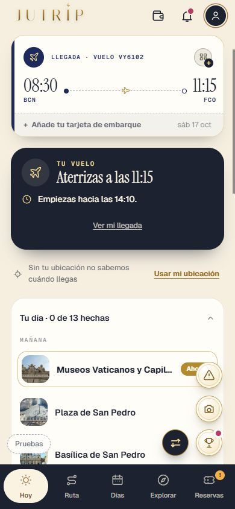
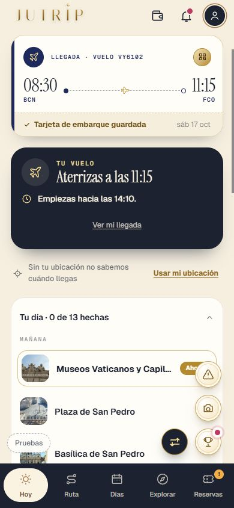
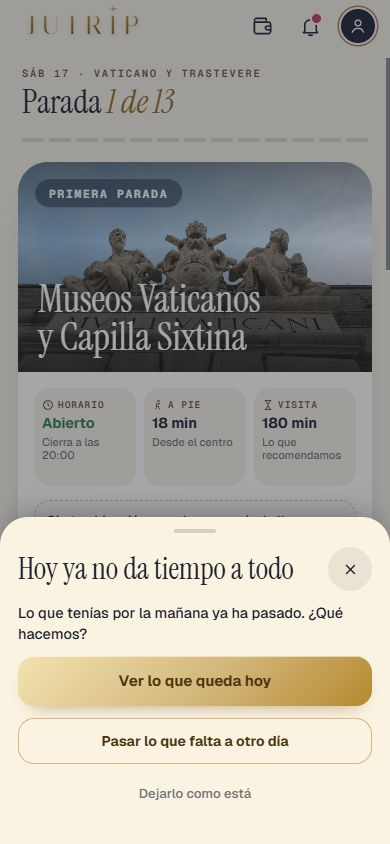
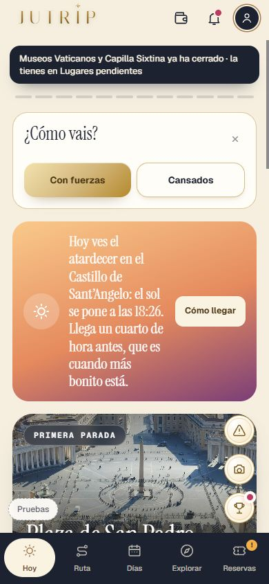
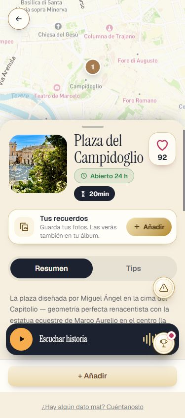

Capturas en modo iPhone. Sin pruebas (tanda de pruebas esta noche): solo npm run build y estas capturas. Detalle en docs/dias/DECISIONES_V48.md.
1 · El billete con QR (por qué no estaba)
Solo estaba puesto en el último día de DÍAS; el primer día usaba la tarjeta vieja y en HOY no había billete. Ahora está en DÍAS (llegada y vuelta) y en HOY (arriba del día de llegada y en el de vuelta). En HOY salía de 2 px de alto (la columna lo encogía): arreglado.

DÍAS, sin tarjeta: QR gris con «+».

DÍAS, con tarjeta: QR dorado y «✓ Tarjeta de embarque guardada».

HOY, día de llegada, sin tarjeta.

HOY, día de llegada, con tarjeta.
2 · El día de llegada, corto
No arreglado, no he podido reproducirlo: el motor da 6-7 paradas con un aterrizaje a las 11:15 (6 zonas, noviembre y julio). «Parada 1 de 3» a las 18:30 es la cuenta de lo que aún se puede hacer (lo cerrado pasa a pendientes). Necesito el viaje de Eric: ver DECISIONES.
3 · Avisos de HOY

«Hoy ya no da tiempo a todo» (sale a 1 h 30 de la hora prevista de la primera parada, una vez al día y nunca encima de «Navidad en Roma»).

A las 18:20 la app ya pasa los Museos a pendientes («ya ha cerrado»). El texto nuevo «Hoy ya no puedes entrar a los Museos Vaticanos: la última entrada era a las 18:00» sale cuando aún no se han movido (frase comprobada con la función; no visto en pantalla).
Free tour: «Tu Free Tour por Roma de las 10:00 ya ha pasado» (no visto en pantalla).
4 · EXPLORAR › ficha

375 px: la barra «Escuchar historia» encima y el botón «+ Añadir» entero debajo.
Tu lista de comprobación
DÍAS, primer día con el vuelo puesto: el billete blanco (no la tarjeta vieja con [Ver]).
HOY, día de llegada: el billete arriba, antes de «Bienvenido».
QR gris con «+» sin tarjeta (lleva a RESERVAS); dorado con tarjeta (abre el código).
EXPLORAR › Plaza del Campidoglio: el botón de añadir se ve entero.
«Hoy ya no da tiempo» no sale antes de empezar el día de llegada ni encima de Navidad.
(Pendiente de ver) el aviso «Hoy ya no puedes entrar…» y el free tour.
No he podido comprobar
Ninguna prueba. No he reproducido el día de llegada de 3 paradas. No he visto en pantalla el aviso «Hoy ya no puedes entrar…» ni el texto del free tour.